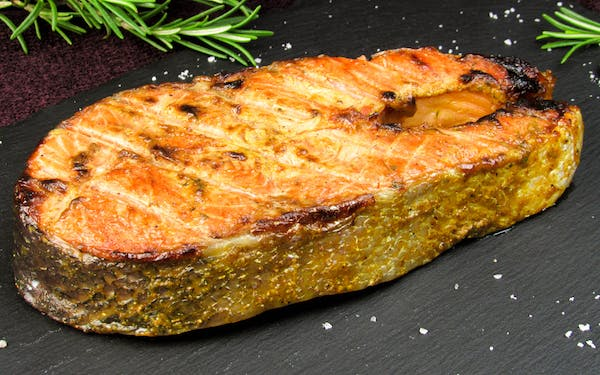

Our Top 10 Salmon recipe
By Admin | 24th april 2023
Salmon is so versatile. It takes to all types of cooking methods -- grilling, pan-frying, roasting, poaching.

12 Budget-Friendly Dinners
By Admin | 24th april 2023
There's a good chance that you already have many of the ingredients for this dish stocked in your kitchen–always a plus.

8 Best Vegan Recipe
By Admin | 24th april 2023
If you've thought about trying a vegan diet, you might wonder if this way of eating is right for you. Good nutrition like fruits, vegetables is another perk.